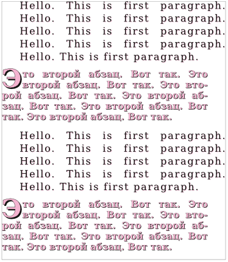
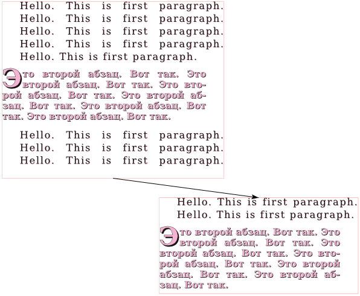
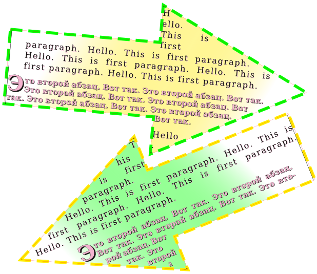
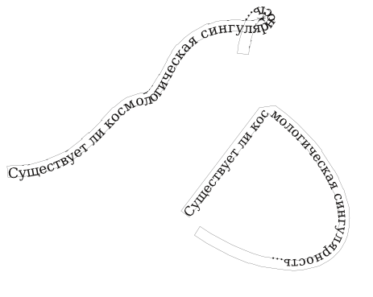

Практическое введение в Scribus
Для того, чтобы начать вводить текст в текстовый блок, достаточно дважды кликнуть по нему левой клавишей мыши. Однако таким способом размещать в Scribus относительно большие объемы текста не удобно. Поэтому в нем есть встроенный текстовый редактор (Story Editor), позволяющий вводить и форматировать текст. Открывается редактор при выделенном текстовом блоке, если нажать кнопку "Изменить текст" (Ctrl + T) на панели инструментов.
Разместите на странице текстовый блок. Откройте текстовый редактор и введите пару абзацев.
Чтобы введенный текст отобразился в блоке, следует на панели инструментов редактора нажать кнопку "Обновить текстовый блок" (она предпоследняя) или сменить фокус, т.е. сделать активным главное окно Scribus, щелкнув по нему. Обратите внимание, что окно редактора не является модальным, т.е не блокирует родительское.
Обновите содержимое текстового блока.
В левой части редактора напротив каждого абзаца есть надпись "Без стиля", которая означает, что к тексту не был применен ни один из существующих на данный момент в документе стилей (способов оформления текста). Если щелкнуть по этой надписи, то появится выпадающий список, в котором можно выбрать любой из доступных стилей. Если никаких стилей не создавалось и не импортировалось, то доступным будет только один единственный стиль - "Default Paragraph Style".
Чтобы на страницах не было хаоса стилевого оформления, рекомендуют заранее продумывать и определять в документе стили и использовать только их для оформления. Если все же возникает необходимость, можно корректировать оформление текста как бы поверх применимого к нему стиля. Ряд настроек стиля доступны в Story Editor. Здесь есть возможность изменять гарнитуру, размер шрифта, включать различные спецэффекты (например, тень, контур) и др. Однако изменения (за исключением выравнивания) в редакторе не отображаются, их можно увидеть непосредственно на странице после обновления текстового блока.
Оформите ваши абзацы с помощью панели инструментов Story Editor.
Иногда бывает необходимо вставить в текст какие-нибудь особенные символы, например, стрелки, математические знаки и т.п. Для этого в окне редактора надо выполнить команду Вставка → Вставить символ. Появится окно "Палитра символов". Если в нем нажать первую кнопку, то появится окно с расширенной палитрой символов, которое должно быть вам знакомо еще из текстовых процессоров.
Вставьте в текст несколько специфических символов.
Как было сказано ранее, текст и изображения почти никогда не готовятся непосредственно в Scribus. Относительно большие объемы текста обычно загружаются из текстовых файлов.
Сохраните документ приложения Scribus, с которым вы работаете. Подготовьте текстовый документ *.txt, содержащий два абзаца и сохраните его в том же каталоге, где была сохранена публикация.
В Scribus добавьте еще один текстовый блок (T). Нажмите Ctrl + I или в контекстном меню блока выберите "Получить текст". Загрузите текст из созданного вами текстового документа.
Если текст не помещается в блок, то у последнего внизу справа появляется сигнализирующая об этом квадратная метка. Чтобы текст поместился, следует изменить размер блока.
В один блок можно загружать текст из разных источников. В контекстном меню помимо пункта "Получить текст" есть еще вариант "Добавить текст". Если в блок уже загружен текст, и снова выбрать "Получить текст", то прежний текст удалится. Если же выбрать "Добавить текст", то новый текст будет добавлен ниже существующего.
Добавьте текст из того же текстового документа. Если требуется, увеличьте текстовый блок.
Итак у нас есть текстовый блок с четырьмя абзацами. Создадим пару стилей и применим их к тексту.
Выполните команду Правка → Стили (F3). В появившемся окне нажмите Создать → Абзацный стиль. Впишите имя стиля - "Первый"; нажмите кнопку "Применить".
Создайте еще один абзацный стиль, назовите его "Второй".
Не закрывая окно стилей, выделите текстовый блок и откройте Story Editor (Ctrl + T). Примените для первого и третьего абзацев "Первый" стиль, а для второго и четвертого "Второй". Обновите текстовый блок и закройте редактор.
В окне стилей выберите "Первый" стиль.
Теперь будет видно, как при изменении свойств стиля изменяется вид текста в блоке.
В любом текстовом стиле можно выделить свойства абзаца (выравнивание, межстрочный интервал и др.) и свойства символов (цвет, размер и др.). Поэтому в окне редактирования стилей Scribus есть две вкладки: "Свойства" и "Символьный стиль". На первой выполняются настройки абзаца, а на второй символов.
Перейдите на вкладку "Символьный стиль". Установите кегль шрифта в 14 pt, трекинг (расстояние между символами) 10%. Включите кнопку "Тень" (она последняя в ряду), установите для тени цвет (цвет обводки) Magenta интенсивностью в 30% . Нажмите кнопку "Применить".
Вернитесь на вкладку "Свойства" окна стилей.
В разделе "Расстояние и выключка" настраивается так называемый интерлиньяж, который представляет собой расстояние между базовыми линиями соседних строк. Базовая линия проходит по нижней границе символов строки (без учета выступающих вниз частей букв). Здесь же можно указать отступы до и после абзаца, тип выравнивания.
Задайте интерлиньяж в 18 pt, отступы перед и после абзаца в 6 pt, выравнивание по ширине. Примените изменения.
Обратите внимание, в Scribus существует два варианта выравнивания по ширине. В первом случае — это "классическое" выравнивание, когда последняя строка не растягивается на всю ширину, а выравнивается по левому краю. Второй вариант — последняя строка, независимо от количества слов в ней, растянется на всю ширину блока. Трудно сказать, где это может понадобиться.
Посмотрим теперь в раздел "Табуляторы и отступы". Задавать размеры соответствующих параметров здесь можно с помощью шкалы или полей.
Установите в поле "Отступ слева" значение 25 pt. При этом в поле "Красная строка" автоматически установится значение -25 pt. Измените его на 0. Примените изменения.
Примечание. Возможно вы уже знаете, что все шрифты делятся на две большие группы — Sans и Serif. Первые — это шрифты без засечек, символы таких шрифтов не имеют различных выступов и закорючек на своих концах. Шрифты типа Serif их имеют.
Для второго стиля установите следующие значения свойств:
Если ширина текстового блока маленькая и строки получаются короткими, то в них помещается мало слов. Поэтому при растягивании строки по ширине пробелы между словами могут быть слишком большим и сильно различаться по строкам. Выходом из положения может быть использование переносов. Scribus позволяет это сделать с помощью команды Расширения → Вставить переносы.
Примените расширение для создания переносов слов.
В результате ваш текстовый блок на странице должен получиться примерно таким:

В текстовые блоки Scribus можно загружать не только плоский текст (*.txt), но и форматированный (*.odt, *.html и др.).
При этом загружаются и стили. Посмотрим, как это выглядит.
Создайте в Writer документ *.odt и наберите в нем несколько абзацев. Примените к ним встроенные в Writer стили: "Заголовок 1", "Заголовок 2", "Основной текст".
Загрузите текст в новый текстовый блок, при этом в окне "Параметры импорта OpenDocument" снимите все флажки.
Посмотрите на появившиеся новые стили в окне стилей (F3).
Загруженные таким образом стили можно править также как и создаваемые в Scribus. Следует отметить, стили также можно импортировать из другого документа Scribus, для чего в окне стилей предусмотрена кнопка "Импортировать".
Существует возможность в плоском тексте использовать специальные теги, которые при загрузке свяжут абзацы с уже определенными в Scribus стилями.
Если для текстового блока вызвать окно "Свойства" (F2) и раскрыть вкладку "Текст", то там обнаружатся множество настроек, сгруппированных по нескольким подвкладкам ("Цвет и эффекты", "Параметры стиля" и т.д.). Многие из них дублируют те, что доступны в окне стилей. Но на подвкладке "Столбцы и расстояние до текста" можно разбить тестовый блок на два и более столбца, сделать отступы от краев блока до текста.
Посмотрите, как будет выглядеть текстовый блок, разбитый на два столбца. После этого верните его к исходному виду.
Несмотря на то, что к абзацам в текстовом блоке были применены стили, на подвладке "Параметры стиля" окна свойств по прежнему остается выбран абзацный стиль "Без стиля". Если попробовать поменять какие-либо настройки текста через окно свойств (кегль или цвет текста), то изменения затронут весть текст в блоке. Если выбрать стиль, то он также применится ко всем абзацам. Ситуация осложняется тем, что у нас в текстовом блоке используются два стиля, а в окне свойств мы можем выбрать только один стиль для всего блока.
Из окна свойств измените гарнитуру и кегль шрифта. Обратите внимание на изменения в текстовом блоке.
В параметрах стиля примените к блоку стиль "Первый". Откройте текстовый редактор (Ctrl + T), установите для второго и четвертого абзацев стиль "Второй".
Следует аккуратно обращаться с настройками текста в окне "Свойства", т.к. после их изменения может оказаться неясным, какими свойствами обладает текст и соответствует ли он своему стилю.
Бывает, что текст должен продолжаться в другом блоке, например, на другой странице. Ведь нельзя растянуть один блок на две страницы сразу. Также бывают ситуации, когда на одной странице текстовые блоки должны иметь разную форму и располагаться в разных местах, но содержать связанный текст. Для решения этой проблемы используют связывание текстовых блоков.
Если текстовые блоки связаны между собой, то текст, не уместившийся в одном блоке, "перетекает" в следующий в цепочке связанных блоков.
Для установления связи между блоками на панели "Инструменты" есть кнопка "Связать текстовые блоки" (N). Сначала выделяют первый текстовый блок, затем активируют этот инструмент и щелкают по второму блоку. Далее, если требуется, второй блок может быть связан с третьим и т.д.
Если надо разорвать связь, то используют инструмент "Разорвать связь текстовых блоков" (U).
Разместите на странице еще один текстовый блок. Свяжите блок, содержащий четыре абзаца с новым блоком.
Уменьшите размер первого блока так, чтобы текст в него не помещался.
Выполните команду Вид → Показывать связи между блоками.

В окне "Свойства" (F2) на вкладках "Линия" и "Цвета" можно задать цвет фона для текстового блока, а также цвет, толщину и вид его рамки. На вкладке "Фигура" можно выбрать иное (не прямоугольное) очертание блока. На "X, Y, Z" можно повернуть блок. На панели "Инструменты" также есть кнопка "Повернуть объект".
Добавьте градиентный фон и пунктирную рамку для ваших текстовых блоков, поверните их на небольшой угол, измените форму блоков (например, сделайте их в виде стрелок).

В Scribus есть возможность размещать текст по контуру. При этом контур может быть как кривой Безье, произвольной кривой, так и любой фигурой или многоугольником.
Добавьте небольшой текстовый блок и впишите в него одно предложение. Скопируйте блок.
Нарисуйте кривую Безье. Выделите ее и один текстовый блок. Выполните команду Объект → Направить текст по контуру.
Добавьте любую фигуру. Направьте второй текстовый блок по ее контуру.

Размещенный по контуру текст можно править в Story Editor (Ctrl + T), а при выделении получившегося объекта можно менять размер контура.